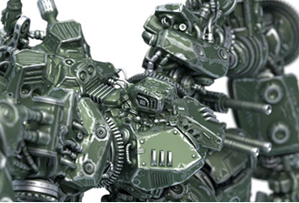
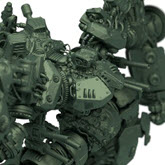
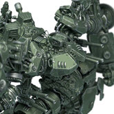
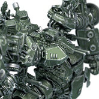
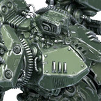
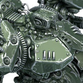
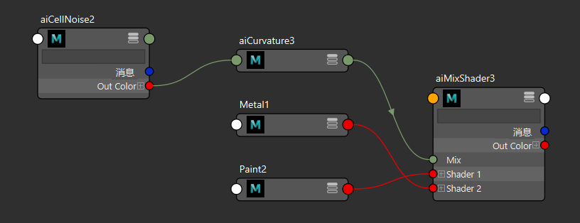

使用曲率着色器制作磨损效果

曲率着色器是为着色器添加细节和真实感的一种简单方法。在本简短教程中，我们将使用曲率着色器制作一种磨损痕迹的着色效果。它将用来表现机甲模型上坚硬曲面边缘发生擦痕的地方。请注意上图中喷漆边缘的磨损程度，已经露出了下面的金属。
提示：
在本教程中，您可以使用层着色器或 mix_shader。
要下载此场景中使用的着色器，请单击此处。有关视频教程，请单击此处。
混合着色器
mix_shader 用于对两个不同的 standard_surface 着色器进行分层。我们将一个 standard_surface 着色器用于顶部绿漆层（绿色），并使用另一个 standard_surface 着色器来表示底部外露的金属曲面。
- 创建 mix_shader，并将其指定给对象。
- 创建一个 standard_surface 着色器并将其重命名为“Green Paint”。
- 创建另一个 standard_surface 着色器并将其重命名为“Metal”。
- 将 Green Paint 连接到 mix_shader 的 Layer1*，将 Metal 材质连接到 *mix_shader 的 Layer2。
曲率着色器
- 将噪波着色器连接到曲率着色器的“半径”(Radius)（“偏差”(Bias)和“相乘”(Multiply)*也将起作用）。尝试使用不同的噪波设置以获得所需外观。不要忘记，您可以将 *color_correct 着色器连接到噪波着色器以进一步优化“磨损”的外观。
- 将曲率着色器连接到分层着色器的“透明度”(Transparency)*属性。这将控制两个 *standard_surface 着色器之间的混合。
偏差(Bias)
- 在下面的示例图像中，曲率着色器的偏差参数已增大并有所夸张，以便更好地演示效果。
|
|
|
|  |
 |
 |
| 偏差：0 |
偏差：0.5（默认值） |
偏差：1 |
采样数(Samples)
- 增大 curvature_samples 的数量可减少噪波，并得到更高质量的结果。
|
|
|  |
 |
| curvature_samples：3 |
curvature_samples：6 |

cell_noise -> curvature -> mix_weight